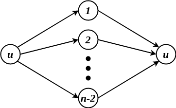
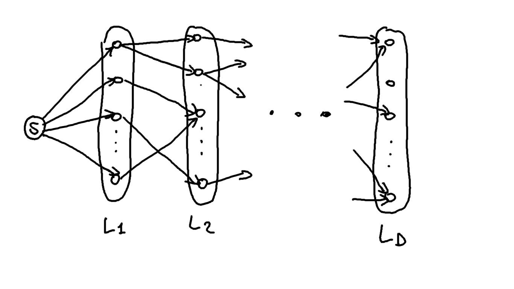
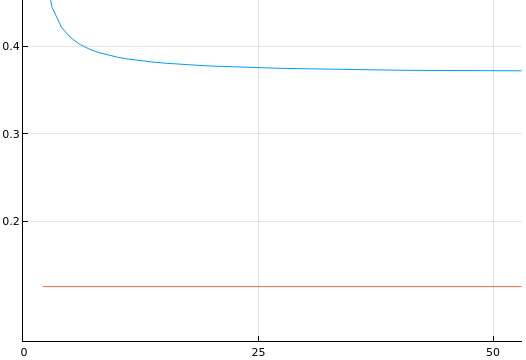

ADRC - Lesson 12
Indice
1 Lowerbound per Protocolli Deterministici
Nella lezion 10 è stato introdotto il protocollo Round-Robin per il task del broadcast a singola sorgente su reti wireless unknown1 con presenza d'interferenza, ed è stato
dimostrato che questo protocollo porta a termine il suo task in tempo \(O(Dn)\), dove \(D\) è il diametro della rate di \(n\) nodi considerata.
Avalendosi di altri costrutti matematici e aggiungendo conoscenza ai nodi è possibile ottenere risultati migliori.
Per esempio, dato l'insieme \( \left[ n \right] \) e un \(k \leq n\) diremo che la famiglia di sottoinsiemi \(H = \lbrace H_1, H_2, ..., H_t \rbrace\) è \((n,k)\)-selettiva se per ogni
sottoinsieme \(S \subseteq \left[ n \right]\) con \(\vert S \vert \leq k\) esiste almeno un \(H_i \in H\) tale che \(\vert S \cap H_i \vert = 1\).
Se supponiamo che tutti i nodi conoscano la stessa faminiglia \(H\) \((n,\Delta)\)-selettiva di \(V\), dove \(\Delta = \max_{v \in V}{ \lbrace d(v) \rbrace }\), allora è possibile definire un protocollo
deterministico che termina il task in questione in tempo \(O(D \cdot \vert H \vert)\), con \(D = diam(G)\).
Nell'articolo Round Robin is optimal for fault-tolerant broadcasting on wireless networks viene dimostrato che per valori sufficientemente grandi di \(n\) esiste sempre una famigli \((n,k)\)-selettiva
di dimensione \(O(k \log{n}\).
Tale risultato implica che sotto queste assunzioni è possibile definire un protocollo che termina il task in tempo \(O(D \Delta \log{n})\).
Purtroppo però senza queste assunzioni non è possibile fare deterministicamente meglio.
THM Data un grafo diretto di trasmissione \(G=(V,E)\) realtivo ad una rete wireless, con diametro \(D\), grado massimo \(\Delta\) tale che \(D\Delta < n\), allora esiste sempre un modo di manipolare i ritardi in modo tale che non si possa risolvere il problema del broadcasting a singola sorgente in un tempo migliore di \[ \Omega\left( D \Delta \log{ \left( \frac{n}{D} \right) } \right) \] a meno che non si assuma che tutti i nodi conoscano un famiglia \((n,\Delta)\)-selettiva di \(V\).
Per esempio, se consideriamo un grafo con un diametro costante, per esempio \(D = 3\), avremo che il grado massimo dei nodi \(\Delta\) crescerà molto velocemente al crescere di \(n\), per esempio in maniera lineare (\(\Delta \in O(n)\)).
Perciò in questo caso avremo un lowerbound di \(\Omega(n \log{n})\).
Quello che ci si chiede è se esiste un modo per abbattere il fattore \(\Delta\) dal lowerbound. Il teorema precedentemente enunciato ci dice che questo è deterministicamente impossibile, perciò è necessario occorrere alla randomness.
2 Randomized protocol for Unknown Radio Networks w/ Interferences
Definiamo un protocollo probabilistico molto semplice, in cui ogni nodo informato trsmette ai suoi vicini con una certa probabilità \(p\) fissata e uguale per tutti. È facile mostrare un controesempio in cui il tampo medio di completamento del protocollo è pessimo.

Figura 1: Controesempio.
Sia la sorgente \(u\).
Sicuramente esiste un tempo \(t_0\) in cui \(u\) trasmette il messagio a tutti i suoi vicini \(1, 2, ..., n-1\) senza interferenze.
Dal time slot successivo tutti i suoi vicini inizieranno a tresmettere verso \(v\), ognuno con probabilità \(p\).
Supponiamo per esempio che \(p = \frac{1}{2}\), e cerchiamo di stabilire entro quanto tempo ci si aspetta che \(v\) verrà informato senza alcuna interferenza.
Per prima cosa dobbiamo calcolare con quale probabilità l'evento \(\mathcal{E} = \mbox{" } v \mbox{ vinene informato"}\) occorre, e questo si può fare
usando la distribuzione binomiale
\[
\mathcal{P}(\mathcal{E}) = \binom{n-2}{1}\frac{1}{2}\left(1 - \frac{1}{2}\right)^{n-3} = \frac{n-2}{2^{n-2}} \in \Theta\left( \frac{n}{2^n} \right)
\]
Ciò implica che il tempo di completamento del task di questo protocollo nel controesempio in questione è di circa \(\Theta\left( \frac{2^n}{n} \right)\) (molto male!).
Anche se \(v\) avesse molti meno vicini, per esempio \(\sqrt(n)\), il tempo di completamento sarebbe pessimo (ovvero esponenziale \(\Theta\left( \frac{2^{\sqrt{n}}}{\sqrt{n}} \right)\)).
Se invece \(v\) avesse solomante 2 vicini che trasmettono, il protocollo terminerebbe in tempi brevissimi (sempre considerando questo esempio).
Ciò ci suggerisce che dobbiamo trovare un valore di \(p\) in modo tale che è poco probabile che avvengano interferenze, ovvero un valore per il quale in media trasmette un solo vicino di ogni nodo.
Considerando sempre il precedente controesempio, il valore ottimale di \(p\) per il quale i vicini di \(v\) devono trasmettere è \(\frac{1}{d^{(in)}(v)}\), ovvero il grado entrante di \(v\).
2.0.1 BGI protocol on \(d\)-regular layered graph
Come primo passo consideriamo grafi con strutture che in qualche modo ci semplificano il lavoro. Consideriamo grafi di tipo \(d\)-regular layered, ovvero grafi suddivisi in strati (o layer) \(L_1, L_2, ..., L_D\) in cui esistono archi solamente da un livello a quello successivo, e in cui ogni nodo \(v\) ha un grado entrante costante uguale a tutti pari a \(d^{(in)}(v) = d\). Inoltre esiste una sorgente \(s\) tale che \((s,v) \in E \; \forall v \in L_1\).

Figura 2: Esempio di \(d\)-regular layered graph.
Osservare che la descrizione appena data non è propriamente precisa, in quanto i nodi in \(L_1\) hanno grado entrate pari ad 1, e quindi non necessariamente \(d\), mentre il grado entrante della sorgente \(s\) è pari a 0.
Definiamo quindi il protocollo BGI per tale modello di grafo col seguente pseudocodice:
- ripeti per \(k = 1, 2, 3, ...\) stage
- ripeti per \(j = 1, 2, ..., c\log{n}\) volte
- per ogni nodo \(x\), se \(x\) è stato informato allo stage \(k - 1\) allora \(x\) trasmette a tutti i suoi vicini con probabilità \(\frac{1}{d}\)
THM il protocollo
BGIsu grafi \(d\)-regolari e \(D\) layered completa w.h.p. il task del broadcast dalla sorgente \(s\) in \(O(D)\) stages e quindi in \(O(D\log{n})\) time slots.
Proof la dimostrazione verrà fatta per induzione sui livelli \(j = 1, 2, ..., D\), ovvero si vuole dimostrare che al termine dello stage \(j\) con alta probabilità tutti i nodi del livello \(L_j\) saranno informati.
Il caso base per \(j = 1\) è banale, percipò assumiamo come ipotesi induttiva che con alta probabilità entro la fine dello stage \(j > 1\) tutti i nodi nel livello \(L_j\) sono già stati informati (ovveor entro \(O(j\log{n})\) time slots). Si vuole ora dimostrare che questo è vero anche per \(j+1\).
Consideriamo quindi un nodo \(v \in L_{j+1}\). Iniziamo col calcolare la probabilità che \(v\) viene informato in un dato time slot della fase \(j + 1\). Tale probabilità è pari alla probabilità che uno solo dei suoi \(d\) inner-neighbors trasmette, mentre gli altri \(d - 1\) "stanno zitti", e ciò avviene con probabilità \[ \binom{d}{1} \frac{1}{d}\left(1 - \frac{1}{d}\right)^{d - 1} = d \frac{1}{d}\left(1 - \frac{1}{d}\right)^{d - 1} = \left(1 - \frac{1}{d}\right)^{d - 1} \] Osserviamo che per valori di \(d \geq 2\) la quantità \(\left(1 - \frac{1}{d}\right)^{d - 1} > \frac{1}{8}\).

Non ha senso considerare \(d = 1\) in quanto non ci sarebbe la necessità di definire un protocollo probabilistico.
Proseguendo, possiamo dire che il nodo \(v\) al livello \(j + 1\) non viene informato in un time slot con probabilità al più \(< 1 - \frac{1}{8}\).
Perciò la probabilità che \(v\) non venga informato in tutti i \(c \log{n}\) time slot dello stage \(j + 1\) è al più \[ < \left(1 - \frac{1}{8}\right)^{c \log{n}} < e^{- \frac{c}{8} \log{n}} = \frac{1}{n^{\frac{c}{8}}} \] La prima disuguaglianza è vera perché ogni nodo trasmette in maniera totalmente indipendente dagli altri, mentre la seconda è data dalla seguente espressione \[ 1 - x < e^{-x} \; \forall 0 < x < 1 \]Ricapitolando abbiamo dimostrato che la probabilità dell'evento \(\mathcal{E}_v = \mbox{"} v \in L_{j + 1} \mbox{ non viene informato entro la fine dello stage } j+1 \mbox{"}\) occorre con al più come \[ \mathcal{P}(\mathcal{E}_v) \leq \frac{1}{n^{\frac{c}{8}}} \] Per union bound, possiamo dire che esiste almeno un nodo al livello \(L_{j+1}\) che non viene informato entro la fine dello stage \(j + 1\) occorre con probabilità al più \[ \mathcal{P}(\bigcup_{v \in L_{j+1}} \mathcal{E}_v) \leq \sum_{v \in L_{j+1}} \mathcal{P}(\mathcal{E}_v) < n \frac{1}{n^{\frac{c}{8}}} = \frac{1}{n^{\frac{c}{8} - 1}} \]
Perciò ponendo \(c = 16\), avremo che la probabilità di avere un cosiddetto "bad stage" in cui non tutti i nodi del relativo livello vengono informati è al più \(\frac{1}{n}\). Possiamo quindi concludere dicendo che ogni nodo \(v \in L_{j+1}\) viene informato entro la fine dello stage \(j + 1\) con probabilià almeno \(1 - \frac{1}{n}\), implicando così l'ipotesi del teorema \(\square\).
Note a piè di pagina:
reti in cui i non hanno nessuna informazione della reta, nemmeno la dimensione oppure il proprio vicinato.